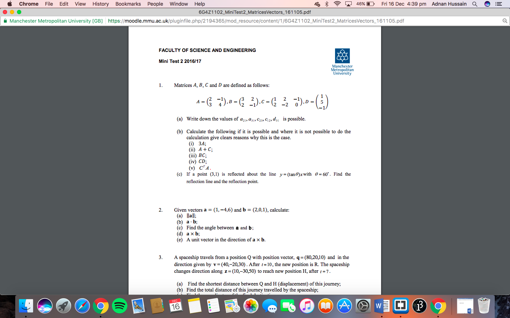

MOHAMMED ADNAN HUSSAIN
MOHAMMED ADNAN HUSSAINThis module is quite different to the other modules i'm studying as it is split into two components. There's the digital logic and assembly language programming and then there's mathematics involved aswell.
I found the first few weeks of CSF quite easy as we were learning about logic gates, which I have learnt about in school when chose the Electronics course. We used the program Logisim to simulate digital logic circuits and we were able to find out the truth tables and boolean expressions of any circuits we built.
In mathematics so far we have covered sets, matrices and vectors. There are a lot of rules that you must learn and understand and that's the only struggle I'm having as sometimes, I find it difficult to know which rule I should apply to the question given. This is something I will practice so that I can complete the assignment that will be given out to complete.
In the screenshot below, you can see the types of questions that come up in the mini test for mathematics.